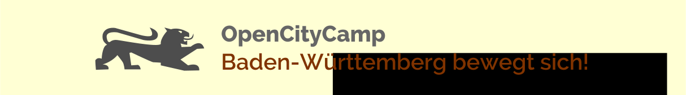

Rückblick auf das OpenCityCamp 2014
Ein voller Erfolg – so darf man das OpenCityCamp 2014 in Stuttgart mit Fug und Recht nennen.
Mehr als 60 Teilnehmende waren bis zu 400 Kilometer angereist, um sich über Open Data, Open Government, Datenjournalismus und darüber hinaus auszutauschen.
So gut wie alle Sessions wurden dokumentiert und nachbereitet – der aktuelle Stand ist hier einzusehen. Wer möchte, kann das Camp auch in der Bildergalerie Revue passieren lassen :)
Die bisherigen OpenCityCamps

Das OpenCityCamp 2014 brachte am 29. November 2014 Interessierte aus Süddeutschland und darüber hinaus im Literaturhaus Stuttgart zusammen. Die Sessions sind hier dokumentiert.

Das OpenCityCamp 2013 fand am 8. und 9. Juni 2013 zum zweiten Mal an der Universität Ulm statt.